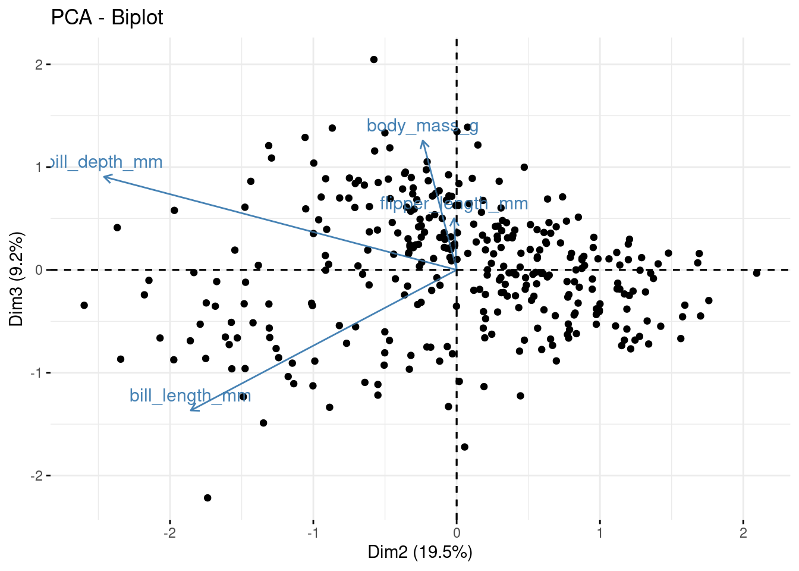
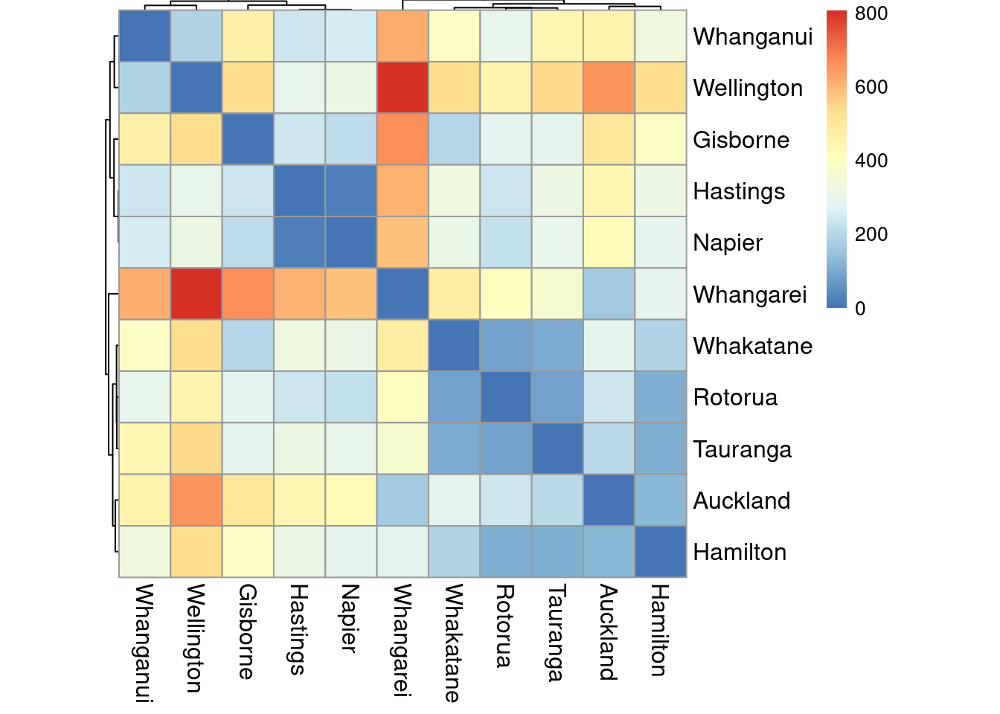

Multidimensional Scaling (MDS)
Multidimensional scaling (MDS) is an extended family of techniques that try to reproduce the relative positions of a set of points in a reduced space given, not the points themselves, but only a matrix with interpoint distances ( dissimilarities ). These distances might be measured with error, or even be non-Euclidean.
Metric Scaling
Metric scaling tries to produce a set of coordinates (a configuration of points) in a reduced number of dimensions whose matrix of interpoint Euclidean distances approximates the original dissimilarity matrix as closely as possible. Principal coordinates (PCO) is one metric scaling technique (it is sometimes called classical or Torgerson scaling ).
Examples in R
Consider data which are not represented as points in a feature space:
- Where we are only provided with (dis)similarity matrices between objects (e.g., chemical compounds, images, trees, or other complex objects)
- Where there are no obvious coordinates in (continuous) n-dimensional space .
Distances (in km) between North Island cities
library(tidyverse)
ni <- read_csv("https://raw.githubusercontent.com/STATS-UOA/databunker/master/data/north_islands_distances.csv")
ni <- ni %>% column_to_rownames(var = "...1")library(pheatmap)
pheatmap(ni, cluster_rows = TRUE,
treeheight_row = 2, treeheight_col = 2,
fontsize_row = 12, fontsize_col = 12,
cellwidth = 26, cellheight = 26)
## $points
## [,1] [,2]
## Auckland 259.23245 67.43013
## Gisborne -107.54173 -285.70950
## Hamilton 129.07943 42.71295
## Hastings -173.12950 -25.15974
## Napier -150.83765 -34.70680
## Rotorua 37.39858 -18.39760
## Tauranga 118.78535 -85.88683
## Whanganui -192.73988 181.50600
## Wellington -385.83172 167.76477
## Whakatane 49.93256 -140.17112
## Whangarei 415.65212 130.61774
##
## $eig
## [1] 5.249373e+05 1.953521e+05 4.217767e+04 1.872276e+04 1.222717e+03
## [6] 2.910383e-11 -1.399691e+02 -4.733140e+02 -1.103819e+04 -1.883151e+04
## [11] -2.462990e+04
##
## $x
## NULL
##
## $ac
## [1] 0
##
## $GOF
## [1] 0.8600209 0.9206005Eckmans colour perception (1954)
Data may from objects for which we have similarities but no underlying (geometric) space. Here the goal is to understand the underlying dimensionality of colour perception.
- Similarities for 14 colours, with wavelengths from 434 to 674nm based on rating by 31 subjects
- Each pair of colours was rated on a 5-point scale:
- 0 = no similarity up to 4 = identical.
- After averaging over 31 raters the similarities were divided by 4 such that they are within the unit interval.
Distances (in km) between 21 cities in Europe
library(ggfortify)
## Plotting Multidimensional Scaling (for interest)
## stats::cmdscale performs Classical MDS
data("eurodist") ## road distances (in km) between 21 cities in Europe.
autoplot(eurodist)
## Plotting Classical (Metric) Multidimensional Scaling
autoplot(cmdscale(eurodist, eig = TRUE))
autoplot(cmdscale(eurodist, eig = TRUE), label = TRUE, shape = FALSE,
label.size = 3)
## Plotting Non-metric Multidimensional Scaling
## MASS::isoMDS and MASS::sammon perform Non-metric MDS
library(MASS)
autoplot(sammon(eurodist))
autoplot(sammon(eurodist), shape = FALSE, label = TRUE,label.size = 3)
## Have a go at interpreting these plots based on the geography of the cities :-)Correspondence Analysis (CA)
CA is a special case of metric MDS where the distance measure is the chi-square distance. It is conceptually similar to principal component analysis but where the data are categorical, counts, rather than continuous. CA is traditionally applied to contingency tables where rows and columns are treated equivalently; it decomposes the chi-square statistic associated with this table into orthogonal factors. Correspondence analysis is usually the best way to follow up on a significant chi-square test.
## , , Sex = Male
##
## Eye
## Hair Brown Blue Hazel Green
## Black 32 11 10 3
## Brown 53 50 25 15
## Red 10 10 7 7
## Blond 3 30 5 8
##
## , , Sex = Female
##
## Eye
## Hair Brown Blue Hazel Green
## Black 36 9 5 2
## Brown 66 34 29 14
## Red 16 7 7 7
## Blond 4 64 5 8## Brown Blue Hazel Green
## Black 36 9 5 2
## Brown 66 34 29 14
## Red 16 7 7 7
## Blond 4 64 5 8##
## Pearson's Chi-squared test
##
## data: HC.df
## X-squared = 106.66, df = 9, p-value < 2.2e-16
The first axis shows a contrast between black haired and blonde haired students, mirrored by the brown eye, blue eye contrast. In CA the two categories, rows and columns play symmetric roles and we interpret the proximity of Blue eyes and Blond hair as showing strong co-occurence of these categories.
Biplot barycentric scaling
- Row points at the centre of gravity of the column levels with their respective weights
- Blue eyes at centre of gravity of the (Black, Brown, Red, Blond) with weights proportional to (9,34,7,64), the hair counts for blue eyes.
- The Blond row point is very heavily weighted so Blond hair and Blue eyes close together